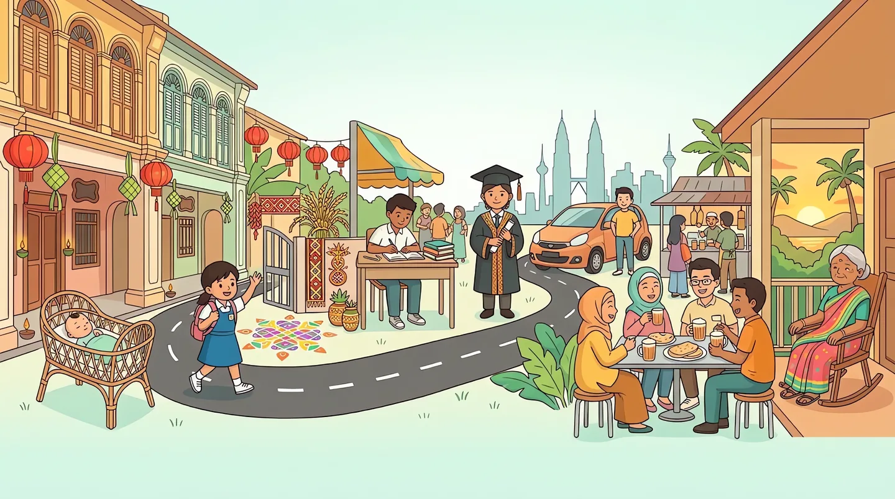

You don't choose the family you're born into, or the year. Everything after that is yours: the late nights before SPM, the first crush, the job offer in KL, the Myvi you saved three years for, the day you finally balik kampung for good.
Some choices open doors. Others close them forever. There's no undo, and no two lives play out the same. When this one ends, all that remains is what you built and who you leave behind. Make it a life worth remembering.